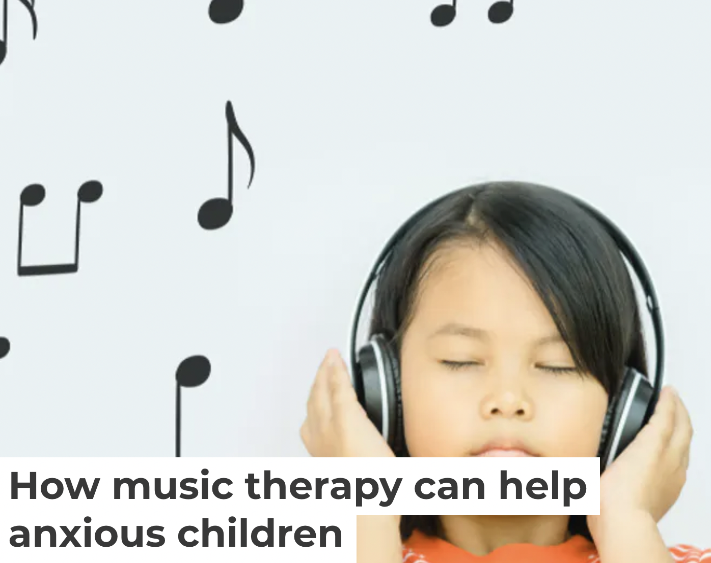

Read More

" In guided imagery sessions, the therapist uses specially selected music and the client is invited to describe what they are feeling and what images the music conjures up. "
Read More
"This demonstrates a complex and adaptable set of emotional interactions with music, and shows how it can offer support in ever changing situations. "

Read More

"Live music has made its way into some surprising venues, including oncology waiting rooms to calm patients as they wait for radiation and chemotherapy."